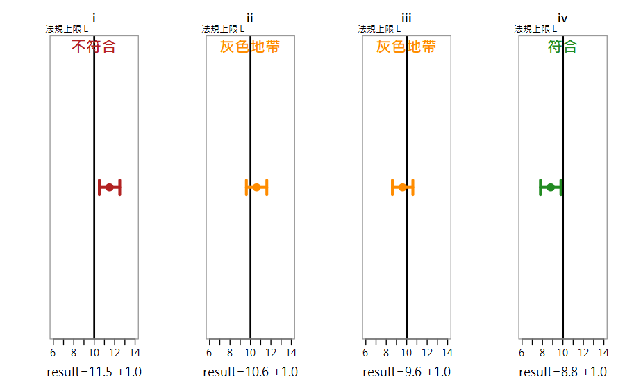

Part 2 量測不確定度（QUAM §8–§9）／第 8 章
合成、擴展不確定度與符合性判定 Combining Rules, Expanded U, Reporting & Compliance
所有誤差來源都評估完了，現在只剩最後一步：合起來、乘上 k、寫成一行專業報告，然後回答客戶的終極問題——合不合格？
🔑 課前暖身
前面把每個零件的誤差都算好了，本章把它們合體：加減用平方和開根號、乘除用相對比例。
最後回答老闆最愛問的問題——「到底合不合格？」（結果 ± U 對上法規限值的四種情境）
本章新詞先認識：合成不確定度 uc＝所有來源合體後的總散布；擴展不確定度 U＝uc 乘 k=2 的 95% 區間；符合性＝結果±U 與限值的相對位置。
名詞卡住了？回 Ch0 名詞圖鑑 查白話解釋與比喻。
本章新詞先認識：合成不確定度 uc＝所有來源合體後的總散布；擴展不確定度 U＝uc 乘 k=2 的 95% 區間；符合性＝結果±U 與限值的相對位置。
名詞卡住了？回 Ch0 名詞圖鑑 查白話解釋與比喻。
學習目標
- 會用 Rule 1（加減）與 Rule 2（乘除）合成標準不確定度
- 會計算擴展不確定度 U = k·uc，並知道 k=2 與 t 值 k 的時機
- 會按 QUAM 建議格式報告結果
- 會依決策規則判定「符合／不符合／灰色地帶」
8.1 一般式：不確定度傳播法則
uc(y) = √ Σ [ci · u(xi)]²，
其中敏感度係數 ci = ∂y/∂xi
QUAM §8.2.2：每個輸入量的 u 經「偏微分 × u」轉換成對 y 的貢獻後，平方相加再開根號
偏微分聽起來可怕，但絕大多數情況會退化成兩條簡單規則：
8.2 兩條黃金規則
Rule 1：加減模型
y = p + q − r + …
y = p + q − r + …
uc(y) = \(\sqrt{(u(p)² + u(q)² + u(r)² + …)}\)
直接用各項的絕對 u。Rule 2：乘除模型
y = p·q/r·…
y = p·q/r·…
uc(y)y = \(\sqrt{( (u(p)/p)² + (u(q)/q)² + … )}\)
用各項的「相對 u」，合成完再乘回 y。QUAM §8.2.8 例題 1：y = p − q + r = 5.02 − 6.45 + 9.04 = 7.61，
u = \(\sqrt{(0.13² + 0.05² + 0.22²)}\) = 0.26。
例題 2：y = op/qr = 2.46×4.32/(6.38×2.99) = 0.56，
相對合成 \(\sqrt{(0.0081²+0.0301²+0.0172²+0.0234²)}\) = 0.043 → uc = 0.024。
🧩 混合式模型
遇到 y=(o+p)/(q+r) 這種混合式，先分別用 Rule 1 算出分子、分母的中間 u，
再用 Rule 2 合成（QUAM §8.2.7）。
8.3 擴展不確定度 U = k · uc
| 情況 | k | 說明 |
|---|---|---|
| 一般情況（QUAM §8.3.3） | 2 | 約 95% 信賴；報告必須註明 k 值 |
| uc 被「自由度 <6 的 Type A 項」主導 | t 值 | 用該項的 df 查雙尾 t（95%），如 df=4 → k=2.8 |
QUAM §8.3.4 稱重例：uc = \(\sqrt{(0.01² + 0.08²)}\) = 0.081 mg， 由 5 次重複的 sobs=0.08 主導（df=4）→ k = t0.975,4 = 2.8 → U = 2.8 × 0.081 = 0.23 mg。
8.4 報告格式（QUAM §9）
擴展不確定度格式：
所述不確定度為擴展不確定度，以涵蓋因子 k=2 計算，信賴水準約 95%。
標準不確定度格式：
總氮：(3.52 ± 0.14) g/100g所述不確定度為擴展不確定度，以涵蓋因子 k=2 計算，信賴水準約 95%。
標準不確定度格式：
總氮：3.52 g/100g，標準不確定度 0.07 g/100g
- U 或 uc 最多取 2 位有效數字；結果位數與 U 對齊（QUAM §9.5.1）
- 分布明顯不對稱（近零結果、MC 法）→ 報區間而非單一 U（QUAM §9.6）
8.5 符合性判定（QUAM §9.7, Figure 2）

圖 8-1 結果 ± U 與法規上限 L 的四種關係（保守決策規則）
| 情境 | 位置 | 保守決策規則判定 |
|---|---|---|
| (i) | 結果 − U > L（整個區間超標） | 不符合 |
| (ii) | 結果 > L 但 (result−U) < L | 灰色地帶（無法判定） |
| (iii) | 結果 < L 但 (result+U) > L | 灰色地帶 |
| (iv) | 結果 + U ≤ L（整個區間合格） | 符合 |
⚖️ 決策規則要事先講好
「測值超限即不符」與「result−U 超限才不符」結論可能相反。
ISO/IEC 17025:2017 要求實驗室與客戶事先約定決策規則（詳見 EURACHEM
《Use of uncertainty information in compliance assessment》）。
# ---- Rule 1：QUAM 例題 1 ----
p <- 5.02; q <- 6.45; r <- 9.04
y <- p - q + r #> 7.61
uc1 <- sqrt(0.13^2 + 0.05^2 + 0.22^2)
round(uc1, 2) #> 0.26
# ---- Rule 2：QUAM 例題 2 ----
y2 <- 2.46*4.32/(6.38*2.99) #> 0.557
rel <- sqrt((0.02/2.46)^2 + (0.13/4.32)^2 +
(0.11/6.38)^2 + (0.07/2.99)^2)
y2 * rel #> 0.0237 -> 0.024
# ---- t 值 k：稱重例 ----
uc_w <- sqrt(0.01^2 + 0.08^2) #> 0.0806
qt(0.975, 4) #> 2.776 (QUAM 取 2.8)
2.8 * uc_w #> 0.23 mg
# ---- 符合性判定函數 ----
judge <- function(result, U, L) {
if (result - U > L) "不符合"
else if (result + U <= L) "符合"
else "灰色地帶（需複驗/加測）"
}
judge(11.5, 1.0, 10) #> "不符合"
judge( 9.6, 1.0, 10) #> "灰色地帶（需複驗/加測）"
judge( 8.8, 1.0, 10) #> "符合"
# ---- 完整小案例：果汁中鉛 ----
Pb <- 0.085
u <- c(rep=0.006, cal=0.004, blank=0.002, vol=0.0015, rec=0.005)
U_Pb <- 2 * sqrt(sum(u^2))
sprintf("Pb = (%.3f ± %.3f) mg/L (k=2)", Pb, U_Pb)
#> "Pb = (0.085 ± 0.018) mg/L (k=2)"
judge(Pb, U_Pb, 0.10) #> 0.085+0.018=0.103 > 0.10 -> 灰色地帶!
R Console輸出 output
[1] 0.26 [1] 0.02374689 [1] 2.776445 [1] 0.2257432 [1] "不符合" [1] "灰色地帶（需複驗/加測）" [1] "符合" [1] "Pb = (0.085 ± 0.018) mg/L (k=2)" [1] "灰色地帶（需複驗/加測）"
📊 Excel 也會算：合成與擴展不確定度
📊 沒有 R 也能動手
兩條黃金規則在 Excel 直接落地，
符合性：用
SUMSQ（平方和）是主角：| 模型 | Excel 公式 | 說明 |
|---|---|---|
| Rule 1 加減 y=p−q+r | =SQRT(SUMSQ(up,uq,ur)) | 絕對 u，例 \(\sqrt{(0.13²+0.05²+0.22²)}\)=0.26 |
| Rule 2 乘除 y=op/qr | =y*SQRT(SUMSQ(uo/o,up/p,uq/q,ur/r)) | 用相對 u |
| 相對 u 欄 | =C2/B2 | u(x)/x 逐列算 |
| 擴展 U | =2*uc | k=2，約 95% |
| 報告格式 | =TEXT(y,"0.00")&" ± "&TEXT(U,"0.00") | 「12.30 ± 0.45」 |
=IF(y+U<上限,"合格",IF(y−U>上限,"不合格","無法判定")) 對照法規限值。